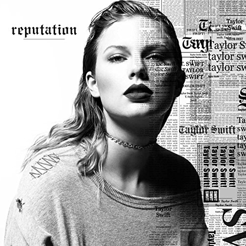

Albums
Folklore

Lover

Reputation
An American pop and country music singer-songwriter whose music has swept across the world
Folklore
Lover
Reputation
"Have I known you twenty seconds or twenty years?"
The lyric expresses the depth and intensity of love in a poetic manner. Knowing for seconds feels like spending years together.
The poetic style of lyric writting characterizes Taylor, with which audience is able to fully immense in the song and sense the beauty underlying it.